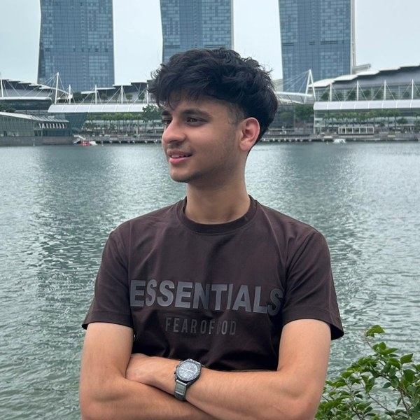

{kind=link}
Computer Science specialisation · thesis with the
CVML Group, advised by
Prof. Angela Yao
|
Aryan Jain
I'm a Master of Computing student at the
National University of Singapore, where I'm writing my thesis
with the CVML Group under
Prof. Angela Yao. I work on agentic
multimodal streaming video understanding — models that watch video
as it arrives and decide what to attend to, what to remember, and when to act, without ever
seeing the future.
|
 |
CurrentlyI'm working toward my first first-author submission, targeting ICML, on interactive streaming video models. I'm also competing in the QuantiPhy Challenge, a NeurIPS 2026 competition on quantitative physical reasoning in vision–language models. |
News
|
ResearchI'm interested in streaming video understanding, multimodal LLMs, and the optimization questions underneath them. Most of my work is about processing long multimodal streams causally, under a fixed compute and memory budget. Some work is highlighted. |
|
Self-Focus: Native Active Perception for Streaming Interaction Models
Dibyadip Chatterjee, Uday Agarwal, Aryan Jain, Fadime Sener, Yale Song, Angela Yao Under review A streaming model that actively controls its own perception: as video arrives it decides which observations to drop, keep, or re-examine at higher resolution, and when it has seen enough to answer. A Qwen3-VL model post-trained with SFT and RL under a bounded context budget, it improves streaming VideoQA on SPOT-Bench, OVO-Bench, and StreamingBench while using visual context more selectively — and the context it curates makes downstream long-video reasoning stronger too. |
|

|
HMS: Bounded Harmonic Mean Perturbations for Stabilizing SGD-Based Regression Optimization
Rathinaraja Jeyaraj, Barathi Subramanian, Hemanth Thulasiraman, Aryan Jain, Anand Paul Under review A plug-and-play scalar perturbation built from the harmonic mean of parameter values across consecutive iterations. It acts as a bounded trajectory-smoothing operator — inheriting the harmonic mean's resistance to outliers — without touching the underlying gradient formulation, and drops into SGD, Adam, and RMSprop to speed up convergence on noisy regression tasks. Joint work with collaborators at Stanford, the University of Maryland, and LSU Health Sciences Center. |
Projects |
|
Adaptive Frame Planning for Video-Language Models
Aryan Jain Completed, 2026 code Training-free pipelines that decide what a VLM should actually see of a video stream — how much history to carry, where the evidence is, what to remember. Reaches 82.04% macro on OVO-Bench realtime at a mean budget of 4.60 frames per question, against 79.36% for a fixed one-frame tail control. Planners and answerers are frozen Qwen3.5 models served with vLLM; no weights are fine-tuned. |
|
Inference-Only Systems for Egocentric Wearable Assistants
Aryan Jain, team hush Meta Wearable AI Workshop @ ECCV, 2026 (6th place, EgoConv track) code Our submitted system for Meta's wearable-assistant challenge at ECCV 2026. Multi-turn conversational QA over first-person video, plus a full experimental line on EgoProactive — deciding when a wearable assistant should speak and when it should stay quiet. Entirely training-free: frozen Qwen3.5 / Qwen3.6 vision-language models served with vLLM, no weights fine-tuned for the challenge. |
|
Anchor: On-Device AI Wellness Companion
Aryan Jain Completed, 2025–2026 A privacy-first wellness companion that runs entirely on-device: LLaMA 3.2 3B fine-tuned with a QLoRA SFT pipeline plus a four-tier context injection system. The memory system alone lifts the base model 10% on benchmark performance; on an 83-scenario eval across 11 behavioral categories, the best model reaches 61.5% against the base model's 57.4%. |
| Experience |
Master’s Thesis Researcher, CVML Group, NUS, Jan 2026–present
AI Research Intern, Siemens, Apr–Aug 2026 Data Science Intern, PayU, Dec 2024–Jun 2025 Amazon ML Summer School, Jul 2024 ML Research Intern, IIT Guwahati, Sep 2023–Apr 2024 |
| Education |
Master of Computing, National University of Singapore, 2025–2026
|
| Teaching | Graduate Teaching Assistant, IT5001: Software Development Fundamentals, NUS, Aug 2026–present |
| Academic Service |
Reviewer, IEEE Journal of Biomedical and Health Informatics (JBHI)
Reviewer, IEEE RECCAP |
| Talks | “Artificial Intelligence — Through Our Work & Sight”, inaugural session of the Global Student Interaction Program, EntIISc, Indian Institute of Science, Bangalore, Oct 2025 |
| Chess | FIDE rated 1629. I’ve represented NUS at international tournaments, played for VIT at the Kasparov Chess Foundation tournament, and won the Chess Masters Premier League 2023 at IIT Kanpur. |
|
Template by Jon Barron (source). |